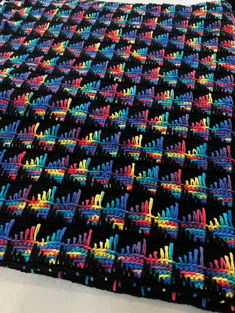

News and Events

NEXT MEETING
Saturday March 15 -- 2:00 am to 4:00 pm
Severna Park Community Center, Boone Station Hall (BSH)
Quilters' Feeding Frenzy
Join us for a shopping expedition! Some of our intrepid volunteers have
been busy pulling our huge collection of donated fabric together into
kits ready to be made into quilts for the kids we serve. We’ll also have a
bin of “Last Chance” fabrics that have been around for a while that will be
passed onto another charity if they don’t go on Saturday. To our knitters and
crocheters - even you might be tempted by the
appealing fabrics that say “take me - make me into a quilt for a needy child!”
Also, bring your finished blankets for Show and Tell.
The blanket pictured below was recently donated
and is worthy of close inspection - so come and see it!

Upcoming Meetings
- Wednesday MARCH 19, 2025 10:00 am to 1:30 pm -- BSH
- Wednesday APRIL 2, 2025 10:00 am to 1:30 pm -- BSH
- Saturday APRIL 19, 2025 10:00 am to noon - Magothy Room
News
BREAKING NEWS! JoAnn Fabrics was sold to a liquidator
and ALL stores will be closing by the
end of May. For the time being, we can still use the Annapolis
store as a drop off location,
but stay tuned as we look for a new location.
Scrappy Sewing With Patty Fundraiser Continues!
We all have scraps! Sign-ups will start on February 15th, 2025;
and the first pattern release is March 8th. When signing up,
you will get a cutting guide that will help you prepare scraps
for the patterns. Every other week for three months, everyone
who signs up will get a one-page color pattern with complete
directions to make a quilt. These patterns could also use yardage
but are designed to use scraps like 2 1/2-inch and 5-inch squares
and various strips and rectangles. If you liked the All Boxed In
pattern, you will love these patterns. Our chapter can benefit.
There is a Facebook group called Scrappy Sewing with Patty that
anyone can join. This is a second opportunity when the entire $20
gets credited to the Chapter so long as you remember to list the
ANNAPOLIS Chapter in your registration.
It’s never too soon to work on Backpack Buddy blankets.
Last year we donated 426 double fleece blankets! The
demand will likely be higher this year - so get sewing!
All quilters, crocheters and knitters...
Frustrated with a project (material/yarn not laying right, too much or not
enough fabric/yarn, etc.)? Feel free to bring your problem project to our
meeting for help and advice.
Reminders
- QUILTERS: with the fabulous fabric donations we’ve received,
we have a mix of washed and unwashed fabrics. Please be sure all fabrics
are washed before cutting and sewing, to avoid uneven shrinkage in
your finished item.
- PLEASE MAKE SURE YOU’VE REMOVED ALL PINS before donating a blanket.
PL National has reported that TWO children had been hurt by pins
left in a seam. As a result, ALL BLANKETS need to be brought to a
meeting or dropped off at a drop off point and then taken to a meeting
so that each and every one can be vetted by another person.
When labeling blankets, please check carefully for any errant pins.
- PLEASE HAND-SEW LABELS ON SECURELY. They are still coming off in the
washing machine.
- MINIMUM acceptable size is 32” by 32”
That's larger than national PL rules -- this is a chapter-specific request.
Larger is always better!
- When donating yarn, PLEASE give it to the Chapter Coordinator and DO NOT put
it directly into the yarn bins (We’ve been getting too many wool and wool blends,
which we can’t use for Project Linus blankets)
- We still need someone to take over the Saturday meeting programs. The job entails
finding someone to present on a knitting, crocheting or quilting topic,
handling the door prizes and the show and tell. We’ve got a bin full of items for door
prizes. If you like the Saturday programs and want to keep them going, please volunteer!
- Dropoff locations are the JoAnn Fabrics in Annapolis, the Severna Park
Community Center, Cottonwood
Quilting, Arts and Antiques at 548 Benfield Road in the Benfield Village Shopping Center
at Benfield and Jumper’s Hole Roads (alongside the Szechuan Inn).
Past Meetings
- Wednesday March 5
- Blanket Work Day
- Saturday February 15
- Panel Quilt Demo
- Wednesday February 5
- Blanket Work Day
- Wednesday January 22
- Blanket Work Day
- Saturday January 18
- Morning Meeting & Blanket Work Day
- Wednesday January 8 2025
- BLANKET WORK DAY
- Saturday December 21
- HOLIDAY PARTY
- Wednesday December 4
- BLANKET WORK DAY
- Wednesday November 20
- BLANKET WORK DAY
- Saturday, November 16, 2024
- C2C CROCHET FRENZY
- Wednesday, November 6, 2024
- BLANKET WORK DAY
- Saturday, September 21, 2024
- AFTERNOON MEETING
- Wednesday, September 4, 2024
- BLANKET WORK DAY
- Wednesday, August 14, 2024
- BLANKET WORK DAY
- Saturday, August 17, 2024
- MORNING MEETING
- Wednesday, August 21, 2024
- BLANKET WORK DAY
- Wednesday, July 17, 2024
- BLANKET WORK DAY
- Saturday, July 20, 2024
- LEARN CROCHETED EDGES FOR FLEECE
Helen Carr will demonstrate fun ways to finish fleece blankets with
different crocheted edges.
- July 10, 2024
- BLANKET WORK DAY
- June 26, 2024
-
BLANKET WORK DAY
- June 15, 2024
-
MORE FUN WITH FLEECE
Sandy Suydam will demonstrate how to
make loopy edged fleece blankets.
- June 5, 2024
-
BLANKET WORK DAY
- May 18, 2024
-
FUN WITH FLEECE AND FLANNEL
Leah will demonstrate how to make fleece squares from scraps and
back with flannel.
- April 24, 2024
-
BLANKET WORK DAY
- April 20, 2024
-
VOLUNTEER APPRECIATION DAY
- March 16, 2024
- QUILTERS FROLIC!
- March 2, 2024
- REGISTER FOR THE KNIT AND CROCHET ALONG BY MARCH 22
- Feb 14, 2024
- BLANKET WORK DAY
- Feb 10, 2024
-
Sandy Campbell will demonstrate how to braid the edges of double fleece
blankets.
- Jan 18, 2024
-
The Severna Park location of Joann Fabrics has CLOSED